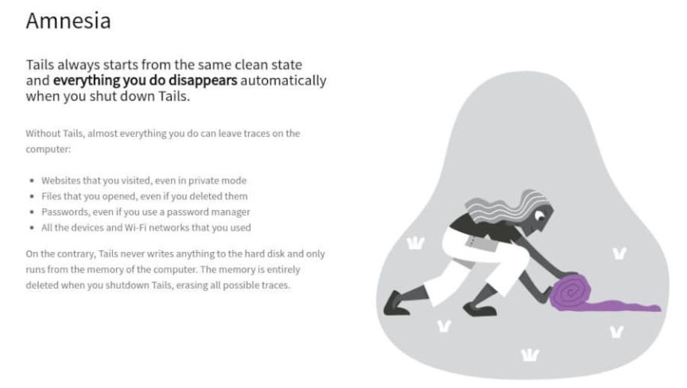
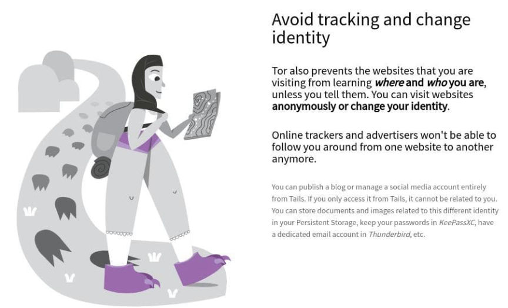
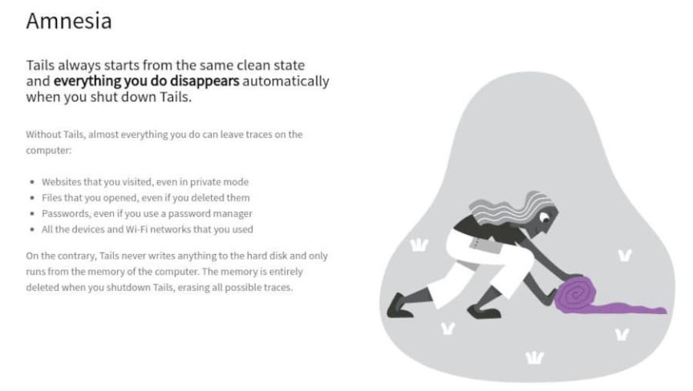
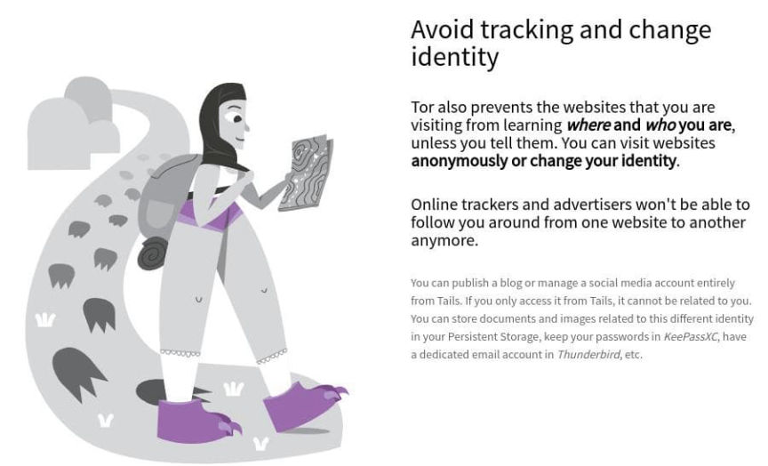

Jersey Teen Sentenced for Buying Amphetamine on Darkweb
A Jersey teenager who bought amphetamine on the darkweb was sentenced to 150 hours of community service and 12 months of probation. According to information heard in court, the defendant purchased drugs on the darkweb to use and sell to his friends.
In November 2020, customs officers executed a search warrant at the then 16-year-old’s residence. During the search, officers found MDMA pills, amphetamine powder, and LSD. They also seized a laptop computer, USB drive, and other electronic devices.
According to the Jersey Evening Post, investigators found the USB drive plugged into the laptop. It was “discovered to have a browser open on a dark web marketplace selling controlled drugs. The USB stick was later found to hold a program designed to anonymise computer use relating to the internet and emails.” Tails!

A search of the defendant’s phone resulted in the discovery of messages discussing drug dealing, internet searches related to drug use, and cryptocurrency exchange accounts. Investigators found evidence the defendant had purchased marijuana online, “pictures depicting drug use, large amounts of cash, evidence of the purchase of hundreds of clear plastic zip-lock bags, and a suspected Instagram and Snapchat advert for MDMA.” The defendant also had a text document on his phone outlining plans for drug importation and trafficking.

“An expert witness valued the seized drugs seized at: two MDMA tablets with with a total value between £40 and £60, as well as 25.45 grams of amphetamine totalling between £1,500 and £2,000, 0.610 grams of amphetamine totalling between £30 and £40, 0.653 grams amphetamine totalling between £30 to £40 and half a tab of LSD worth between £10 and £15.”
At an earlier hearing, the defendant pleaded guilty to possession charges and later admitted arranging to import 35 grams of amphetamine to a friend’s house.
The defendant’s attorney told the court that her client struggled with undiagnosed autism and ADHD and that he primarily used the drugs for “medical purposes.”
[em]Edited 3 Aug 2022 to revise introductory paragraph with no material changes to content.[/em]
In November 2020, customs officers executed a search warrant at the then 16-year-old’s residence. During the search, officers found MDMA pills, amphetamine powder, and LSD. They also seized a laptop computer, USB drive, and other electronic devices.
According to the Jersey Evening Post, investigators found the USB drive plugged into the laptop. It was “discovered to have a browser open on a dark web marketplace selling controlled drugs. The USB stick was later found to hold a program designed to anonymise computer use relating to the internet and emails.” Tails!

Out of all the fictional dystopian art styles that exist, THIS is the dystopian art style we get? FML
A search of the defendant’s phone resulted in the discovery of messages discussing drug dealing, internet searches related to drug use, and cryptocurrency exchange accounts. Investigators found evidence the defendant had purchased marijuana online, “pictures depicting drug use, large amounts of cash, evidence of the purchase of hundreds of clear plastic zip-lock bags, and a suspected Instagram and Snapchat advert for MDMA.” The defendant also had a text document on his phone outlining plans for drug importation and trafficking.

Womp womp
“An expert witness valued the seized drugs seized at: two MDMA tablets with with a total value between £40 and £60, as well as 25.45 grams of amphetamine totalling between £1,500 and £2,000, 0.610 grams of amphetamine totalling between £30 and £40, 0.653 grams amphetamine totalling between £30 to £40 and half a tab of LSD worth between £10 and £15.”
At an earlier hearing, the defendant pleaded guilty to possession charges and later admitted arranging to import 35 grams of amphetamine to a friend’s house.
The defendant’s attorney told the court that her client struggled with undiagnosed autism and ADHD and that he primarily used the drugs for “medical purposes.”
[em]Edited 3 Aug 2022 to revise introductory paragraph with no material changes to content.[/em]